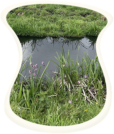
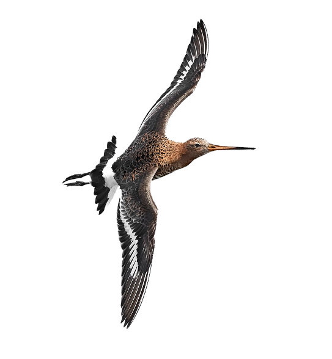
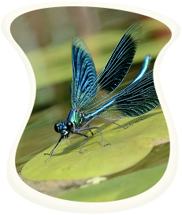
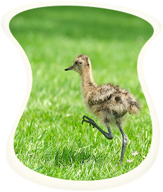
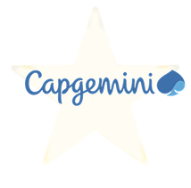
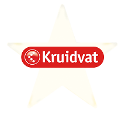

Kruidenrijke slootranden
met verschillende grassen, bloemen en kruiden

Wij zaaien slootranden in met verschillende grassen, bloemen en kruiden. Zo trekken we meer insecten aan en vergroten we de biodiversiteit rondom onze boerderijen.
Rond Amsterdam, voor Amsterdam
met trots
50+ partners
in Amsterdam

sinds 2018
104 km
slootranden hersteld

tot 2030
1000+ km
slootranden willen herstellen


Grutto zegt:
Ik woon met meer dan 30 soorten dieren en planten in de slootranden ergens in de Rondehoep. Wil je met mij vliegen naar de Rondehoep?
Vlieg mee met mij!”
Ontdek de kaartBoeren, natuur en bewoners
Kruidenrijke slootranden
met verschillende grassen, bloemen en kruiden

Wij zaaien slootranden in met verschillende grassen, bloemen en kruiden. Zo trekken we meer insecten aan en vergroten we de biodiversiteit rondom onze boerderijen.
Plas-drasgebieden
makkelijk voedsel voor dieren

Wij verhogen tijdelijk het waterpeil, zodat weidevogels makkelijker voedsel kunnen vinden. Tegelijk ontstaat een leefgebied voor vogels, insecten en andere dieren.
Meer kuikens
veilig in Amstelland

Wij maaien onze graslanden pas na het broedseizoen. Zo krijgen nesten de kans om uit te komen en kunnen jonge kuikens veilig opgroeien.




Boer Hans vertelt:
Ontdek de reis van jouw cappuccino